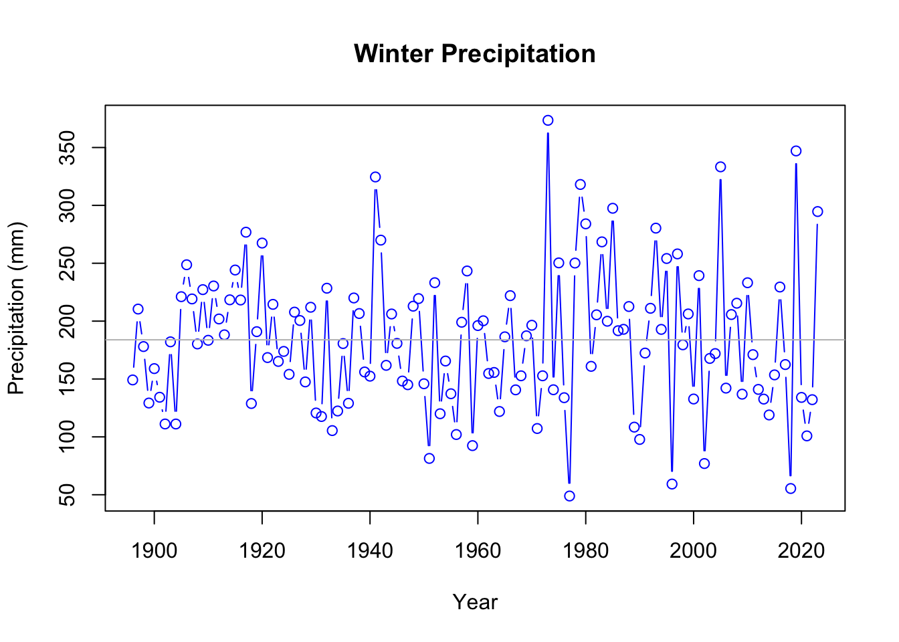
Climate reconstruction from tree rings by stepwise regression
DISC 2026
The original Rmd file (ReconStep.Rmd) with full explanations, the UWFs it calls, sample input data, and running instructions are can be download from the GitHub repository
PART 1. Read input, optionally transform y, and build a lagged matrix of chronologies
PART 2. Correlation screening of lagged chronology matrix
NULL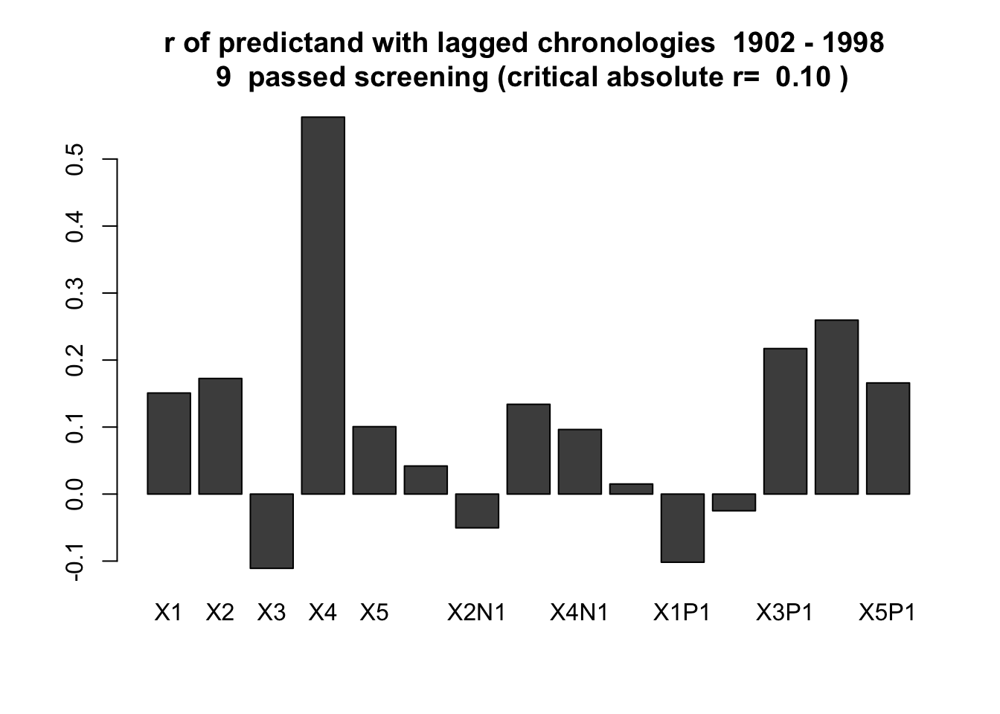
[1] "Variables passing screening (these in W2 in order L to R by ranked absolute r)"[1] "X1" "X1P1" "X1N1"PART 3. Optionally extend calibration period
PART 4. PCA transformation of chronologies
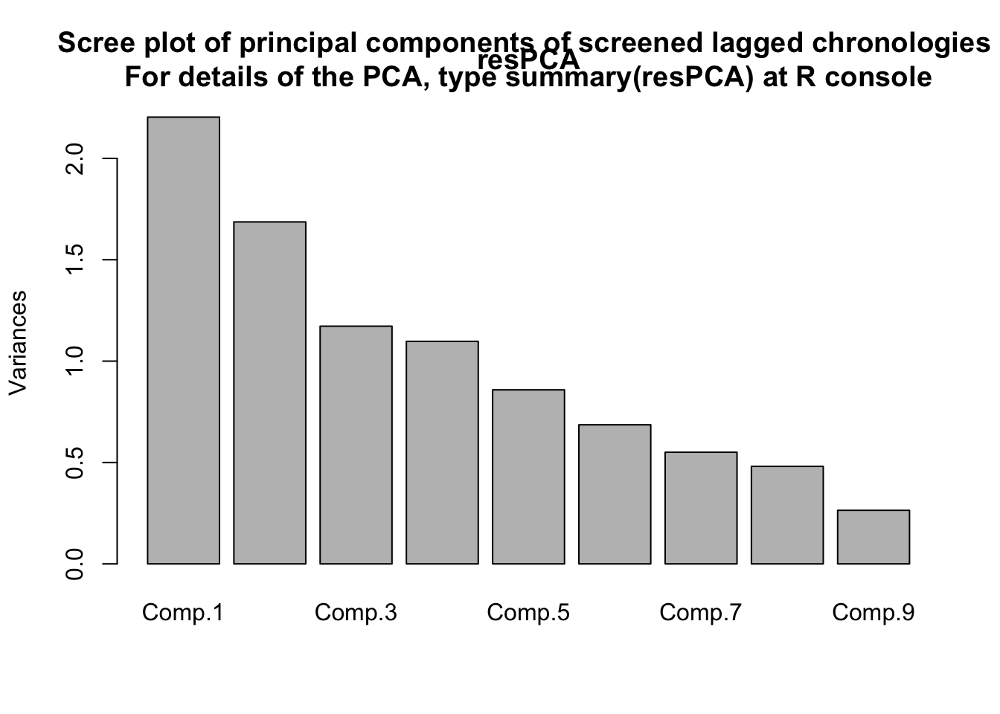
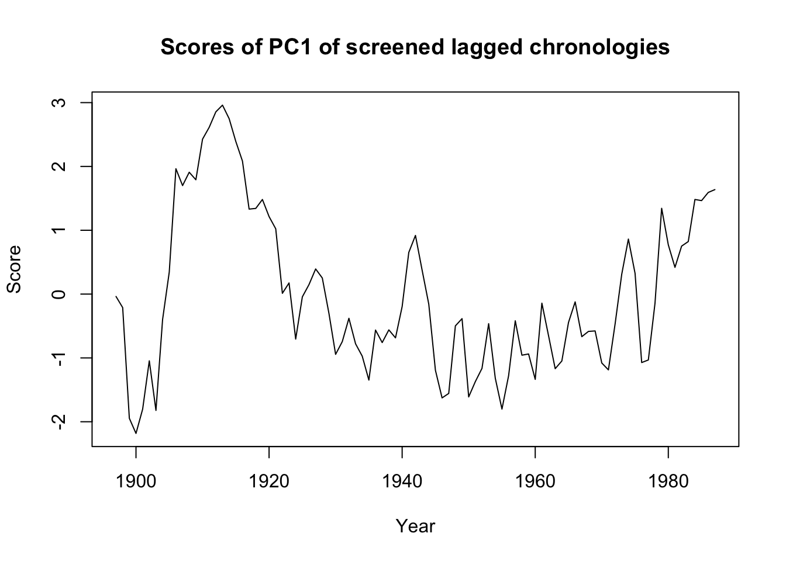
PART 5. Regression modeling
Warning in rm(bb, bbnms, bbnms1, bbnms2): object 'bb' not found
Call:
lm(formula = y ~ U)
Residuals:
Min 1Q Median 3Q Max
-78.850 -28.066 -4.253 23.015 140.387
Coefficients:
Estimate Std. Error t value Pr(>|t|)
(Intercept) 184.277 3.674 50.159 <2e-16 ***
Comp.1 8.196 3.913 2.095 0.0383 *
Comp.2 48.079 4.032 11.923 <2e-16 ***
Comp.3 6.347 4.285 1.481 0.1411
---
Signif. codes: 0 '***' 0.001 '**' 0.01 '*' 0.05 '.' 0.1 ' ' 1
Residual standard error: 41.07 on 121 degrees of freedom
Multiple R-squared: 0.5466, Adjusted R-squared: 0.5353
F-statistic: 48.62 on 3 and 121 DF, p-value: < 2.2e-16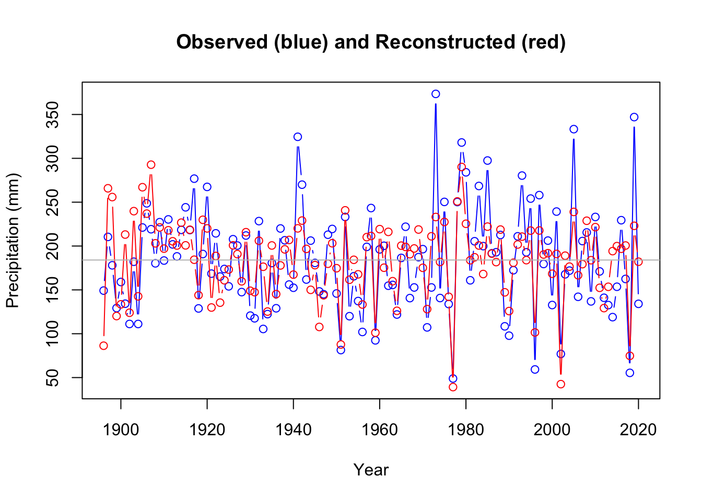
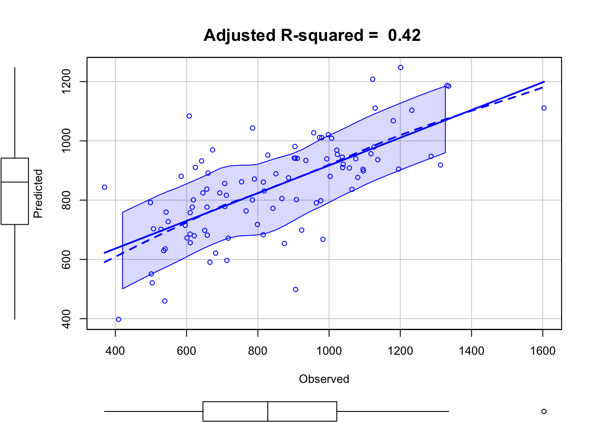
PART 6. Reconstruction
[,1] [,2]
1 86.32890 86.32890
2 265.84745 265.84745
3 255.84606 255.84606
4 120.15843 120.15843
5 133.50523 133.50523
6 213.08952 213.08952
7 123.93740 123.93740
8 239.78438 239.78438
9 142.60858 142.60858
10 267.06594 267.06594
11 236.96078 236.96078
12 292.75473 292.75473
13 203.07891 203.07891
14 221.20049 221.20049
15 197.04386 197.04386
16 217.96709 217.96709
17 205.41692 205.41692
18 200.59910 200.59910
19 226.65480 226.65480
20 200.76140 200.76140
21 218.56644 218.56644
22 184.38927 184.38927
23 143.97719 143.97719
24 229.91798 229.91798
25 220.12279 220.12279
26 129.88634 129.88634
27 188.65321 188.65321
28 135.44228 135.44228
29 160.94912 160.94912
30 173.17848 173.17848
31 200.81540 200.81540
32 190.79184 190.79184
33 159.77925 159.77925
34 215.77974 215.77974
35 148.97559 148.97559
36 147.41323 147.41323
37 206.03407 206.03407
38 176.38072 176.38072
39 125.28204 125.28204
40 200.64321 200.64321
41 145.17069 145.17069
42 177.88359 177.88359
43 196.20445 196.20445
44 206.92414 206.92414
45 167.39484 167.39484
46 220.15515 220.15515
47 229.02439 229.02439
48 196.73826 196.73826
49 150.05476 150.05476
50 178.20305 178.20305
51 107.73267 107.73267
52 143.85121 143.85121
53 179.81365 179.81365
54 203.18938 203.18938
55 174.70213 174.70213
56 87.70513 87.70513
57 240.69336 240.69336
58 161.57598 161.57598
59 184.30032 184.30032
60 167.72889 167.72889
61 133.30336 133.30336
62 210.13974 210.13974
63 211.42549 211.42549
64 101.15446 101.15446
65 219.27124 219.27124
66 175.27926 175.27926
67 216.14274 216.14274
68 159.90261 159.90261
69 126.13093 126.13093
70 200.43086 200.43086
71 198.99478 198.99478
72 190.67394 190.67394
73 197.20527 197.20527
74 218.83443 218.83443
75 175.16730 175.16730
76 128.03380 128.03380
77 211.09663 211.09663
78 233.10288 233.10288
79 181.83333 181.83333
80 227.46331 227.46331
81 142.15658 142.15658
82 39.17020 39.17020
83 250.89588 250.89588
84 290.14108 290.14108
85 225.39382 225.39382
86 183.79815 183.79815
87 187.15898 187.15898
88 200.60513 200.60513
89 168.07164 168.07164
90 222.11753 222.11753
91 191.33514 191.33514
92 181.69843 181.69843
93 218.77090 218.77090
94 147.21158 147.21158
95 125.84622 125.84622
96 180.95345 180.95345
97 201.74171 201.74171
98 210.71769 210.71769
99 183.91793 183.91793
100 217.60438 217.60438
101 101.46003 101.46003
102 217.70411 217.70411
103 190.34724 190.34724
104 191.82684 191.82684
105 168.40452 168.40452
106 190.97694 190.97694
107 42.50661 42.50661
108 188.99244 188.99244
109 176.50090 176.50090
110 238.90649 238.90649
111 166.66617 166.66617
112 179.34486 179.34486
113 228.83567 228.83567
114 183.83285 183.83285
115 221.53818 221.53818
116 152.35878 152.35878
117 129.23883 129.23883
118 153.52366 153.52366
119 194.20652 194.20652
120 199.88088 199.88088
121 196.88813 196.88813
122 200.58661 200.58661
123 74.78763 74.78763
124 223.05523 223.05523
125 182.10286 182.10286PART 7. Independent verification
PART 8. Analysis of residuals
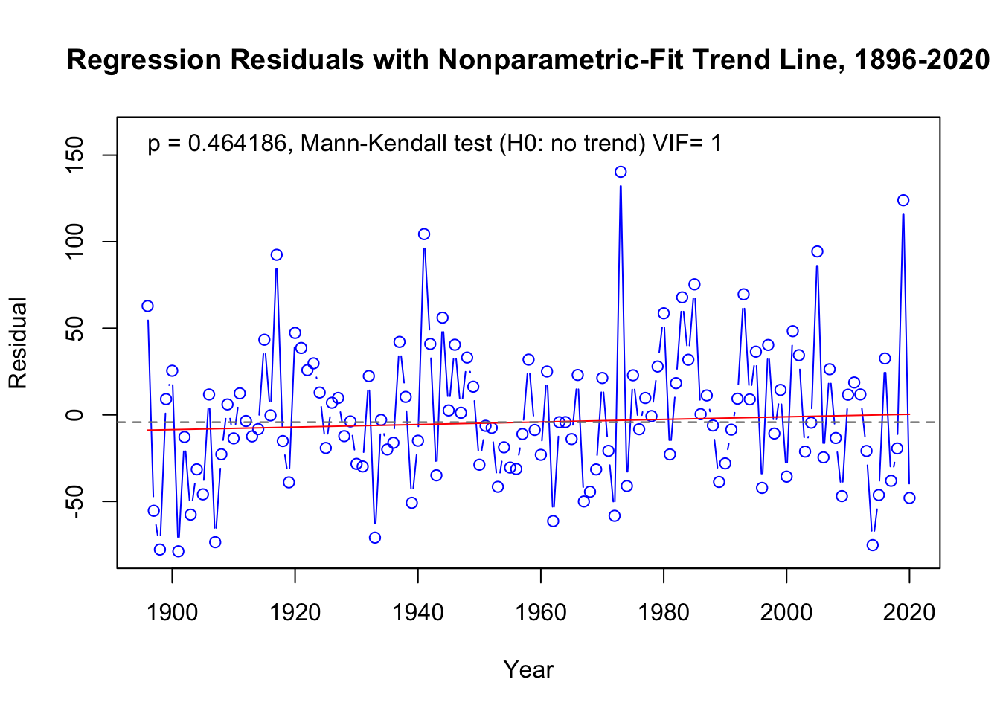
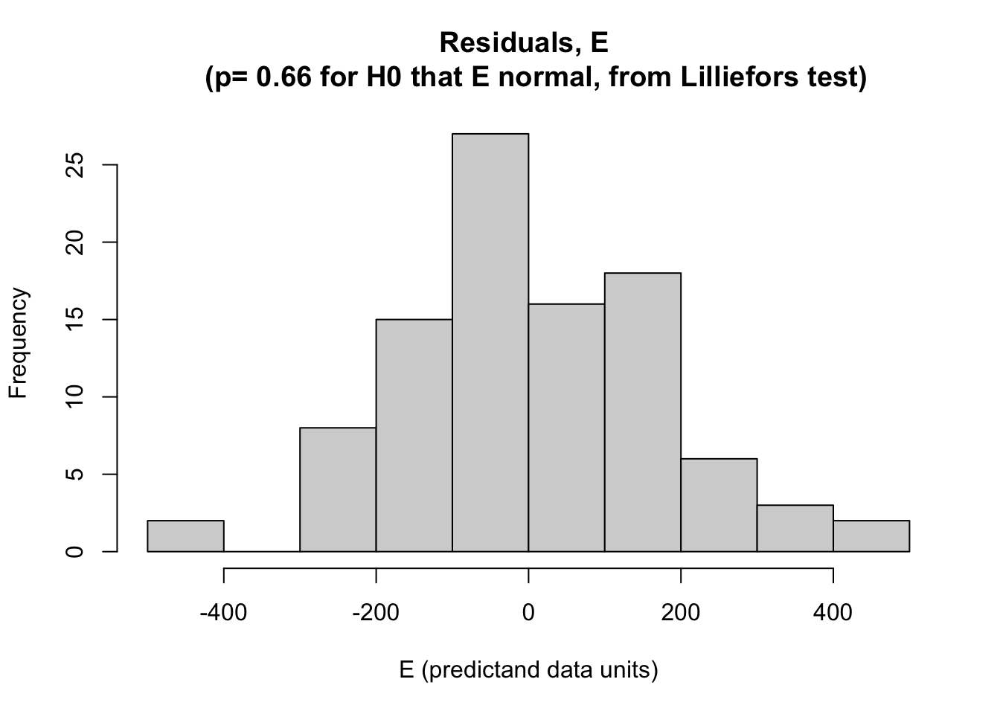
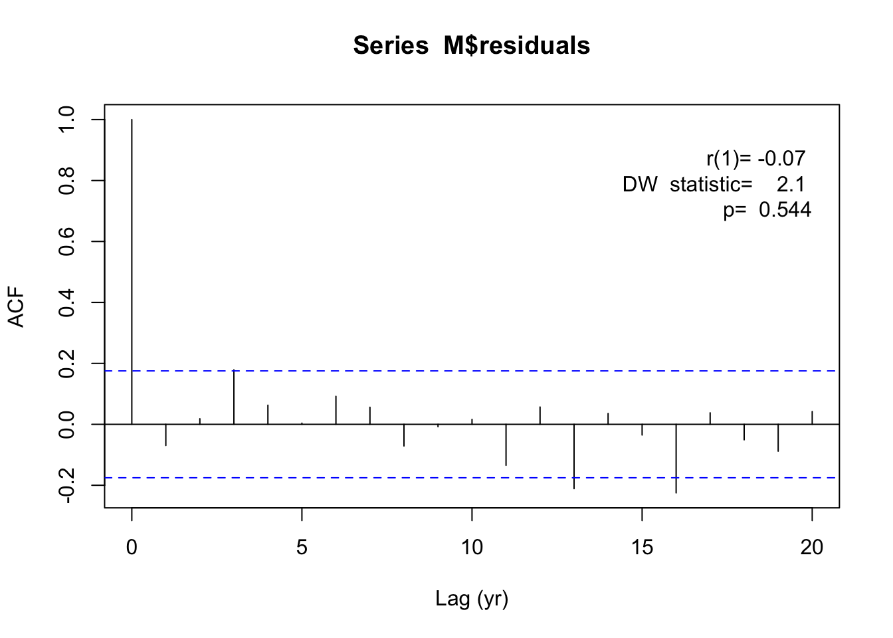
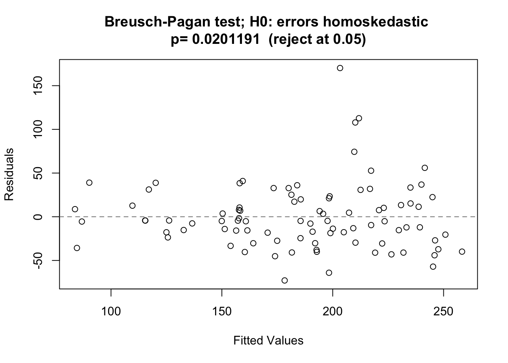
PART 9. Split-sample analysis to check stability of reconstruction model
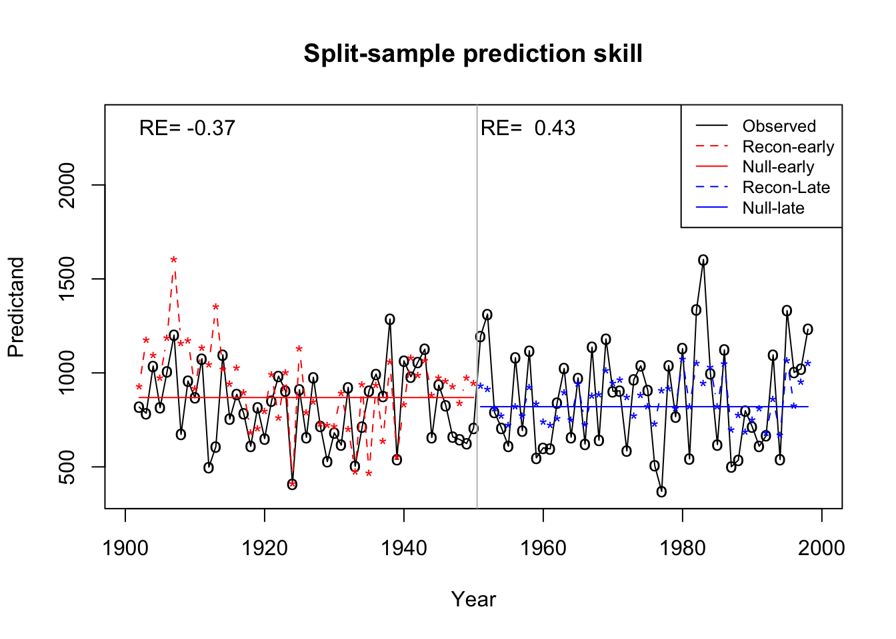
PART 10. Confidence interval for reconstruction
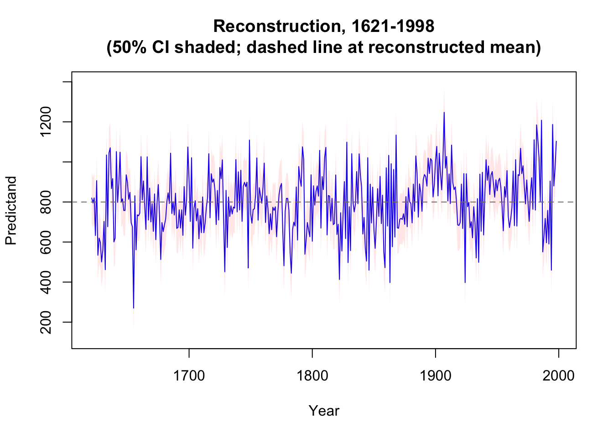
PART 11. New plots
Scale for y is already present.
Adding another scale for y, which will replace the existing scale.
Scale for y is already present.
Adding another scale for y, which will replace the existing scale.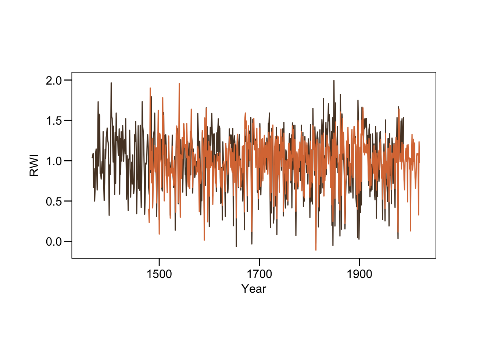
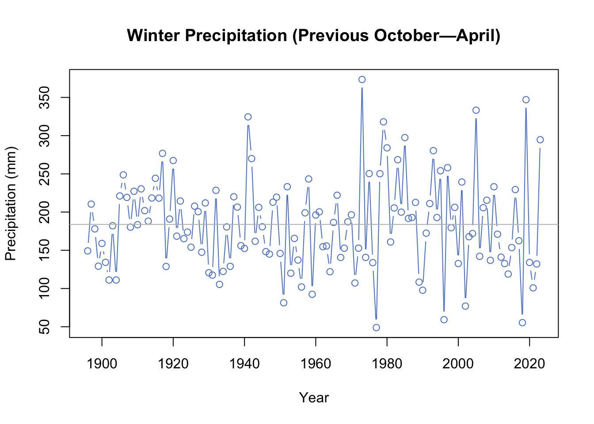
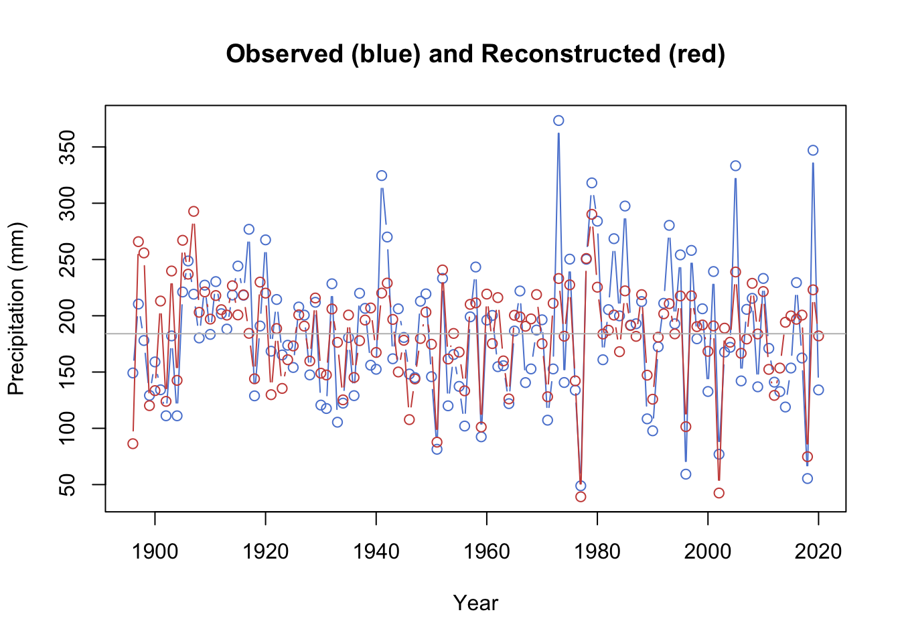
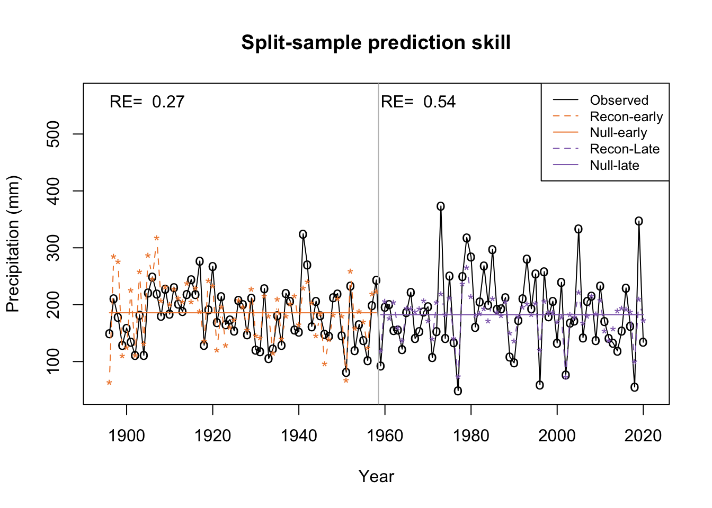
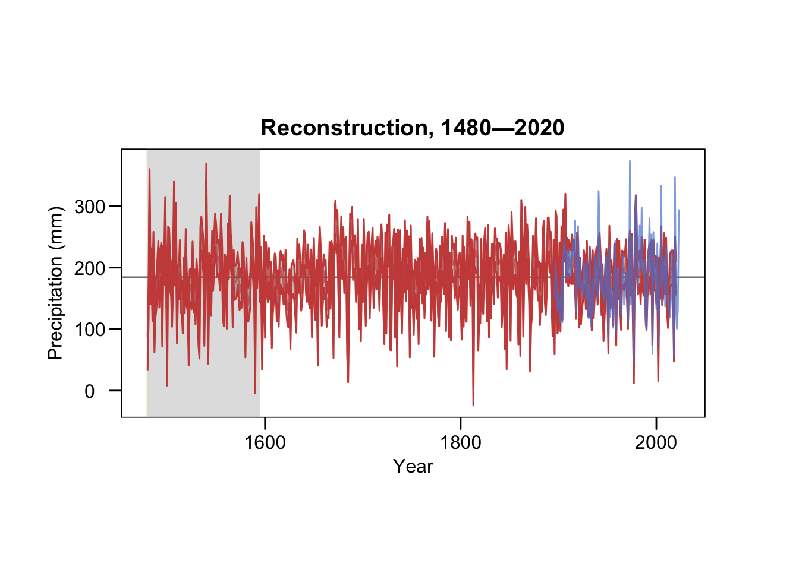